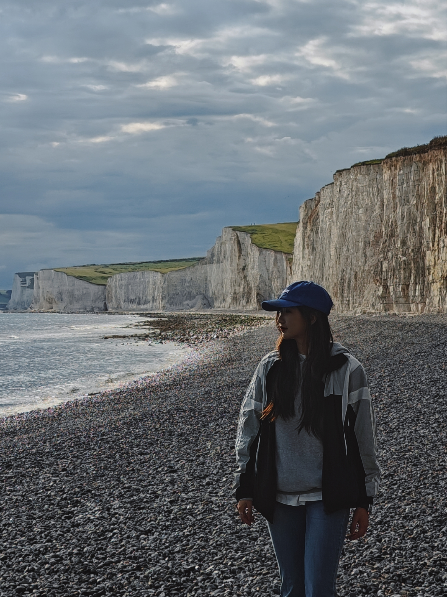
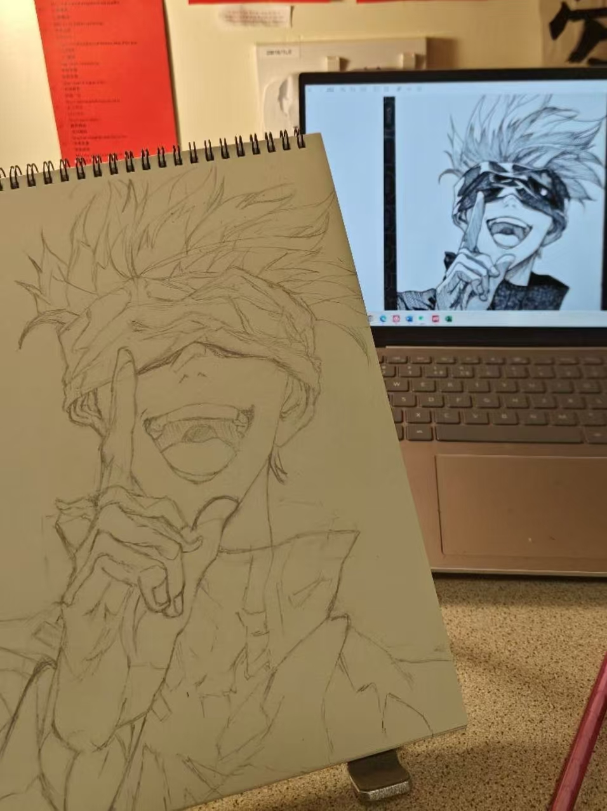
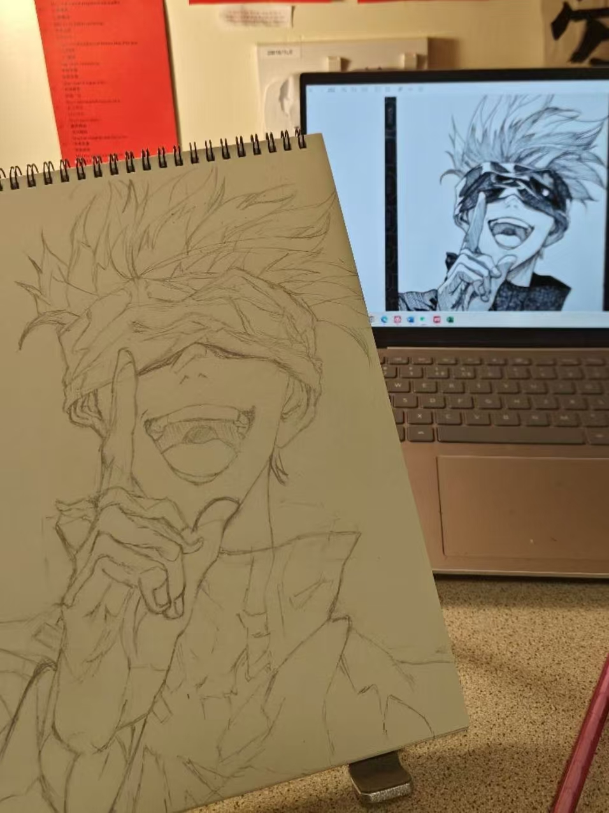
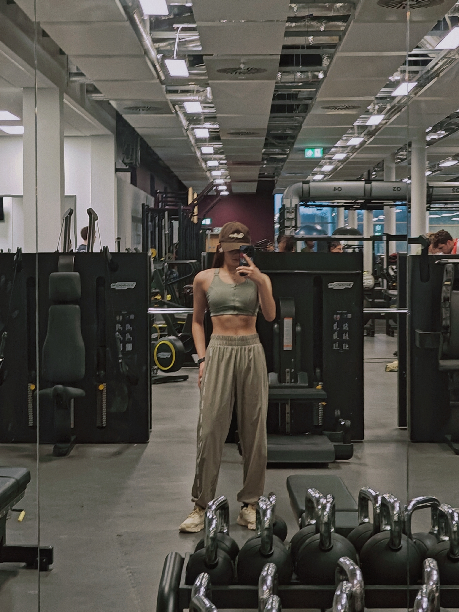
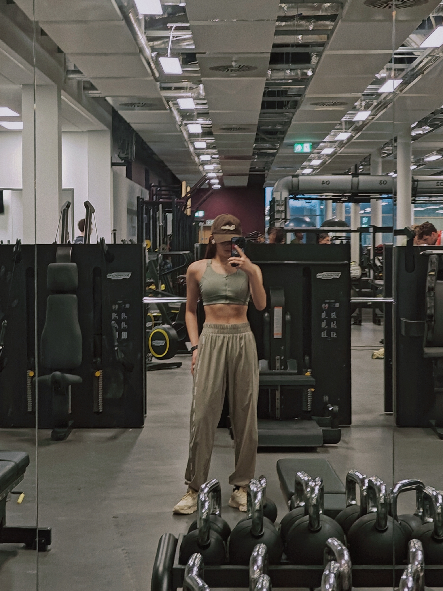

FUHAN LI
2nd Year - University of Warwick
Personal Information
- Name: FUHAN LI
- Major: BSc Accounting and Finance
- Department: WBS
- Hobbies: Singing, Painting, Fitness, Photography

About
"Hello! I’m FUHAN, a second-year student at Warwick Business School studying BSc Accounting and Finance. My coursework includes Financial Accounting, Management Accounting, Business Law, and Economics. I’m excited about pursuing a career in accounting and auditing, and I’m currently preparing for the ACA qualification.
This August, I had the chance to intern at China Everbright Bank. This experience was eye-opening as I worked in various roles, including customer service, wealth management, and telesales. I gained valuable insights into banking operations and explored insurance at Everbright Insurance. Additionally, I learned about investment strategies at Everbright Securities International. A standout moment was leading a team to present on overseas financial services, which earned recognition from the branch manager.
In the summer of 2024, I worked as a Social Media Specialist at Class-Bro in Shanghai. Here, I created engaging content that increased subscriptions by 40% and organized events and Q&A sessions to connect with prospective students. This role enhanced my skills in content creation and event management, and it was rewarding to see the impact of my work on student engagement.
Earlier, I completed an internship with Bright Network, where I participated in practical finance exercises with PwC, including PESTLE analysis and inventory audits. I also gained insights from industry leaders at top firms like Deloitte and KPMG. This experience provided me with a solid understanding of finance and consulting practices.
Outside of academics and work, I stay active with regular gym workouts and have a passion for singing. I recently achieved a top ten position in a campus competition organized by the Warwick China Society.
I’m enthusiastic about applying my skills and experiences as I continue to advance in my finance career."
 



 
